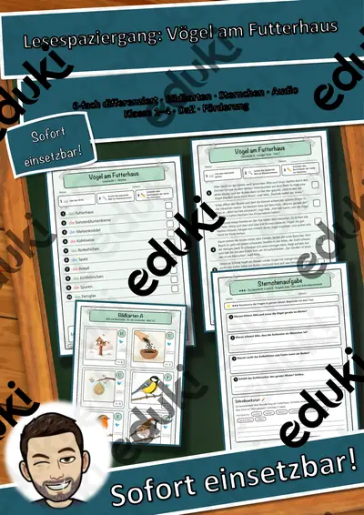
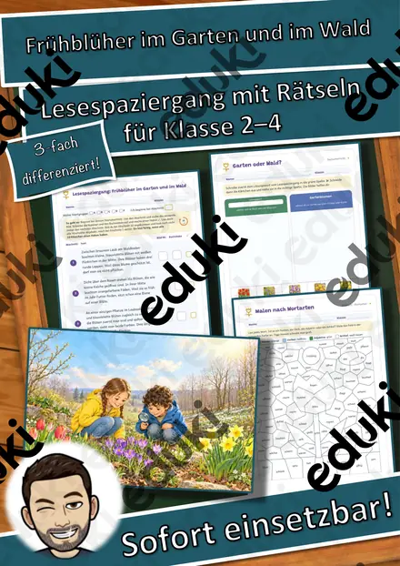
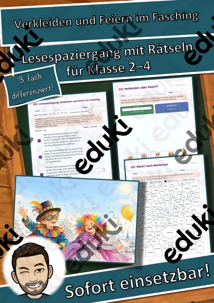
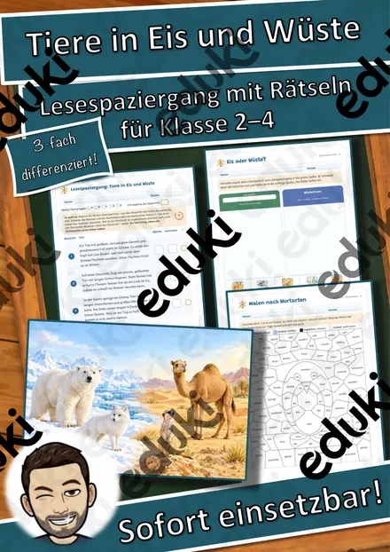
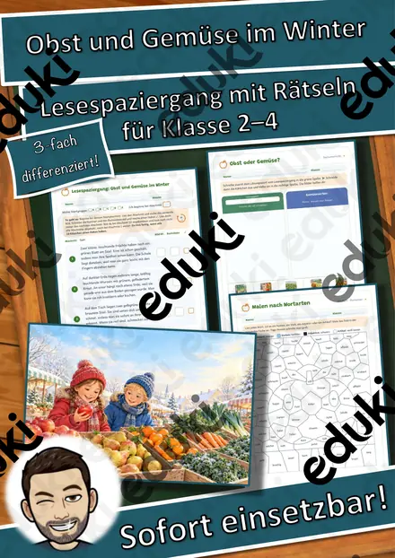
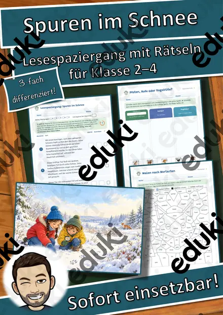

Lesespaziergang Ein Nebeltag im November – 6-fach differenziert mit Bildkarten, Sternchenaufgaben und Audio (Klasse 1–4)
Lesen, laufen, Lösungswort: Beim Lesespaziergang „Ein Nebeltag im November“ lesen alle Kinder dieselbe Geschichte – jedes auf seinem Niveau. Mila (8) und Jonas (6) gehen an einem Novembermorgen zu Fuß zur Schule. Alles liegt im Nebel – und auf dem Weg gibt es zehn Dinge zu entdecken.
So geht es: Die 10 Bildkarten hängen im Klassenzimmer, im Flur oder auf dem Schulhof. Jedes Kind bekommt das Blatt seiner Lesestufe, liest Station für Station, sucht das passende Bild und notiert den Buchstaben von der Karte. Nach den kleinen Ziffern sortiert ergeben die Buchstaben das Lösungswort TAUTROPFEN – die Selbstkontrolle ist eingebaut.
Sechsfach differenziert – alle Kinder laufen zusammen, mit denselben Karten und demselben Lösungswort:
Stufe 1 – Wörter: Ein Wort je Station (Nomen mit Artikel) (Leseanfänger, DaZ-Einsteiger)Stufe 2 – Wortgruppen: Adjektiv + Nomen (Klasse 1/2, DaZ)Stufe 3 – Kurze Sätze: Ein einfacher Satz je Station (Klasse 1/2)Stufe 4 – Zwei Sätze: Zwei Sätze mit mehr Einzelheiten (Klasse 2)Stufe 5 – Kurzer Text: Zusammenhängende Geschichte in 10 Abschnitten (Klasse 2/3)Stufe 6 – Langer Text: Das Bild wird nur umschrieben – Lesen zwischen den Zeilen, mit Sachwissen (Klasse 3/4, starke Leser)Das steckt drin (19 Seiten + Deckblatt):
- Hinweise für die Lehrkraft: Ablauf, Stufenwahl, Differenzierungs- und Bewegungsvarianten, Sachwissen, Lehrplanbezug
- 20 Bildkarten in zwei Sätzen: A = Bild + Buchstabe, B = Bild + Wort mit Artikel-Farbe (für Lesestufe 1–2 und DaZ), dazu Start- und Kontrollkarte
- 8 Leseblätter: Lesestufe 1–4 je eine Seite, Lesestufe 5 und 6 je zwei Seiten
- 3 Sternchenaufgaben: ★ Wörter und Artikel zu Bildern · ★★ Richtig/Falsch und Satz schreiben · ★★★ Fragen zum Text mit Begründung und Schreibwerkstatt mit Wortspeicher
- Laufzettel mit Ich-kann-Check
- Hör-Spaziergang per QR-Code: alle 10 Wörter und die kurzen Sätze vorgelesen – für Leseanfänger und DaZ-Kinder
- Lösungen zu allen Blättern
Zielgruppe: Grundschule Klasse 1 bis 4 in einer Klasse gleichzeitig, Förderschule, DaZ, Leseförderung, jahrgangsgemischtes Lernen. Einsatz: Deutsch (Leseflüssigkeit, Textverständnis auf Wort-, Satz- und Textebene), Sachunterricht (Wetter), Freiarbeit, Wochenplan, Vertretungsstunde, Lesestunde mit Bewegung. Dauer 20–45 Minuten.
Teil der Reihe „Lesespaziergang 6-fach“ mit den Geschwistern Mila und Jonas (3 Geschichten: Ein Nebeltag im November, Auf dem Weihnachtsmarkt, Vögel am Futterhaus) – im Paket günstiger.
Illustrationen KI-erzeugt und bearbeitet, keine Fotos, keine realen Personen. Audio per Sprachsynthese. Texte mit KI-Unterstützung erstellt und geprüft.
Viel Freude beim Lesen und Laufen wünscht Snice! :)
Ähnliche Materialien

Lesespaziergang Materialpaket: 3 Geschichten, 6-fach differenziert – Herbst, Advent, Winter (Klasse 1–4, DaZ)

Lesespaziergang Vögel am Futterhaus – 6-fach differenziert mit Bildkarten, Sternchenaufgaben und Audio (Klasse 1–4)

Lesespaziergang Auf dem Weihnachtsmarkt – 6-fach differenziert mit Bildkarten, Sternchenaufgaben und Audio (Klasse 1–4)

Lesespaziergang: Frühblüher im Garten und im Wald – 3-fach differenziert (★/★★/★★★), Klasse 2–4

Lesespaziergang: Verkleiden und Feiern im Fasching – 3-fach differenziert (★/★★/★★★), Klasse 2–4

Lesespaziergang: Tiere in Eis und Wüste – 3-fach differenziert (★/★★/★★★), Klasse 2–4

Lesespaziergang: Obst und Gemüse im Winter – 3-fach differenziert (★/★★/★★★), Klasse 2–4
